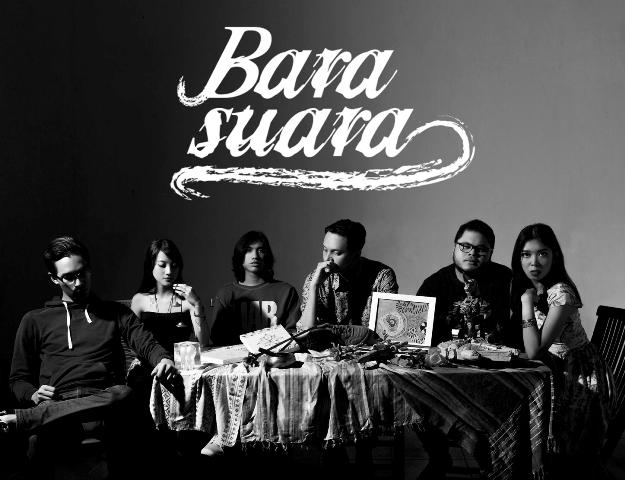

1. Efek Rumah Kaca - Seperti Rahim Ibu (PLAY)(CHORD)
2. Fourtwenty - Zona Nyaman (PLAY)(CHORD)
3. Superman Is Dead - Suset Di Tanah Anarki(PLAY)(CHORD)
4. Payung Teduh - Untuk Perempuan Yang Sedang Di Pelukan(PLAY)(CHORD)
5. Endah n Rhesa - Liburan Indie(PLAY)(CHORD)
6. Naif - Air dan Api(PLAY)(CHORD)
7. Sheila On 7 - Filem Favorit(PLAY)(CHORD)
8. Sisitipsi - Alkohol(PLAY)(CHORD)

9. Bara Suara - Sendu Melagu(PLAY)(CHORD)
10. Mocca - I Remember(PLAY)(CHORD)
11. Stars and Rabbit - Man Upon The Hill(PLAY)(CHORD)
12. Danilla - Berdistrasi(PLAY)(CHORD)
13. Danilla - Berdistrasi(PLAY)(CHORD)